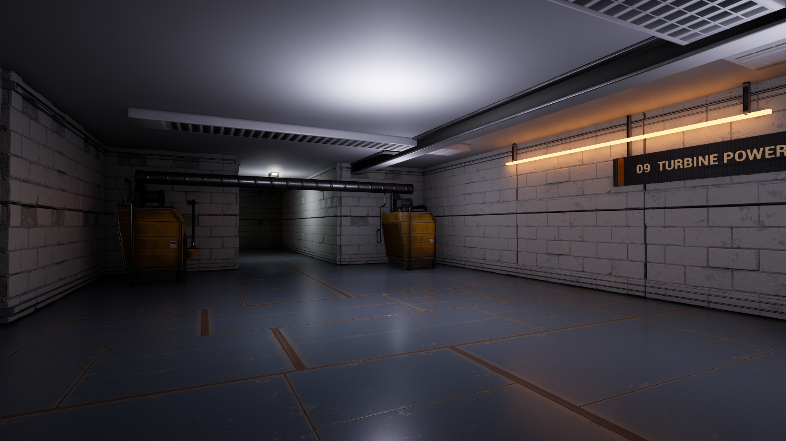
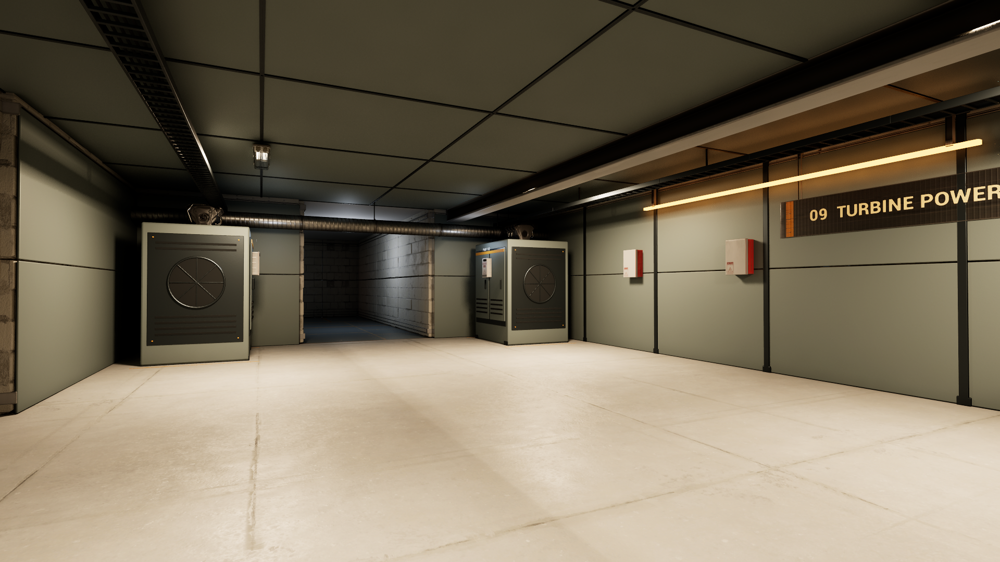

Unreal Python steuert die Gestaltung; Blender Python erzeugt die eigenen Module. Verwendet wurden vorhandene lokale Industrie-Assets und PBR-Texturen. Twinmotion ist installiert, eine unterstützte Autoren-API wurde jedoch nicht verifiziert.
Die Messung zeigt einen ruhenden Ausschnitt auf einer RTX 3070 Ti, je etwa acht Sekunden. Sie belegt weder Multiplayer-Leistung noch die Leistung von 25 umgestalteten Räumen. Das Ergebnis ist ein visueller Prototyp; insbesondere individuelle Abnutzung und feinere Maschinendetails fehlen noch für einen fotorealistischen Endstand.